Native iPhone 17 Pro screenshots at normal system text size. Screens share a displayed width; the supplied reference is clipped to its phone screen using CSS only. OS safe areas and aspect ratios differ. “Actual” uses existing cached app data. QA fixtures exercise populated / empty presentation only; temporary routes were removed. The Expo developer gear is development chrome.
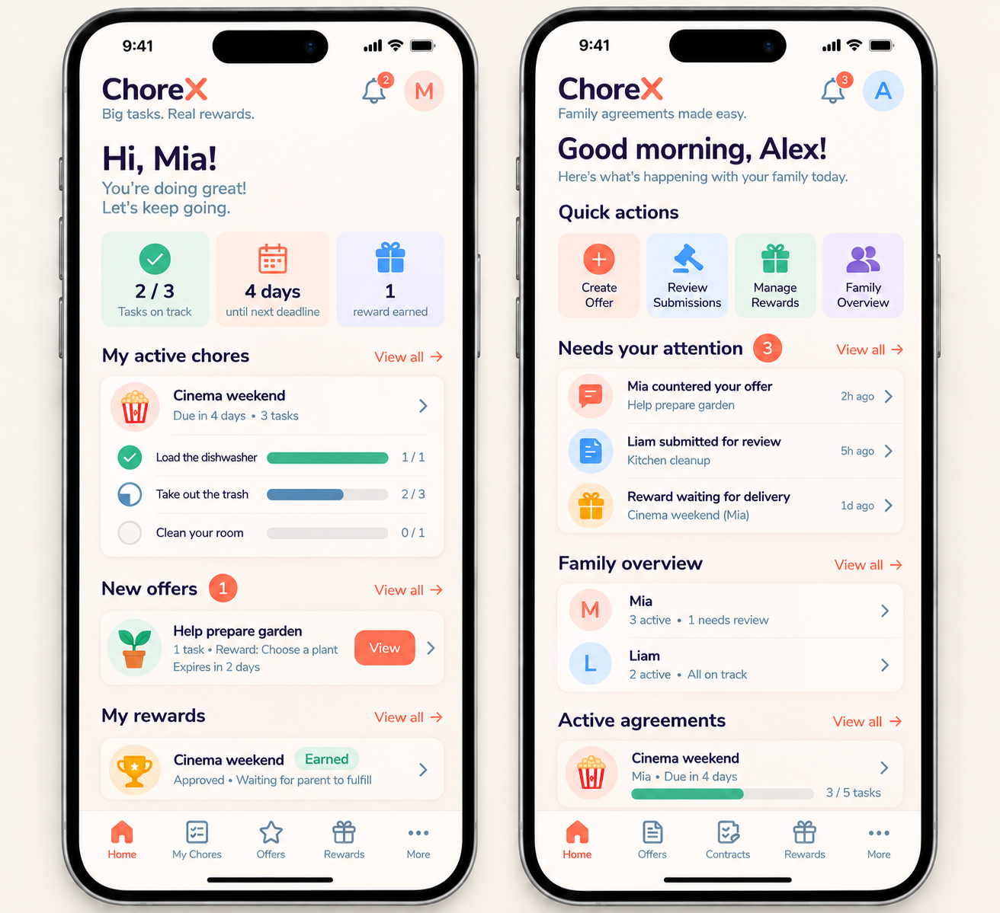
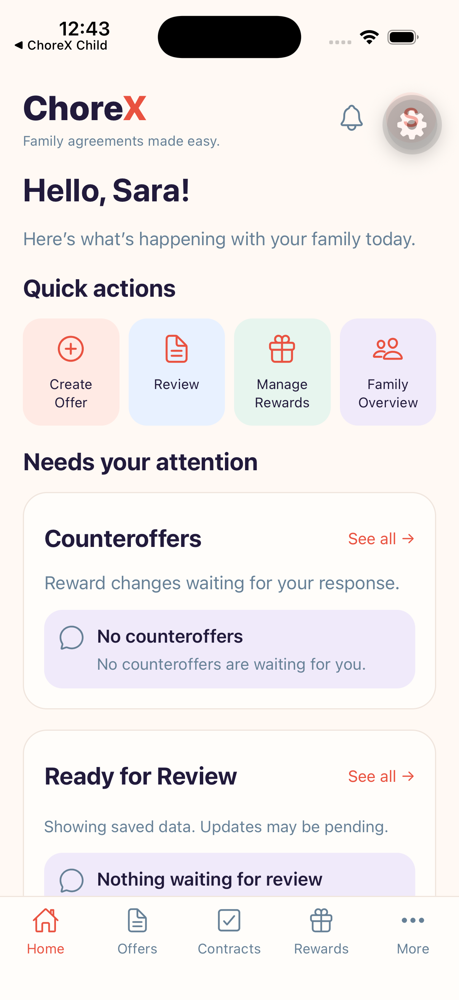
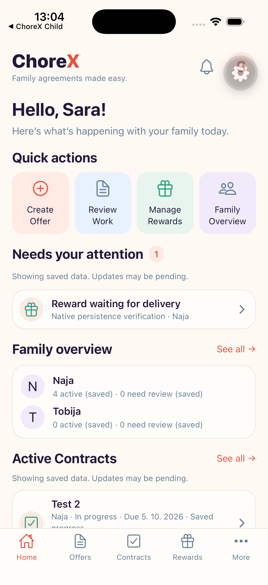
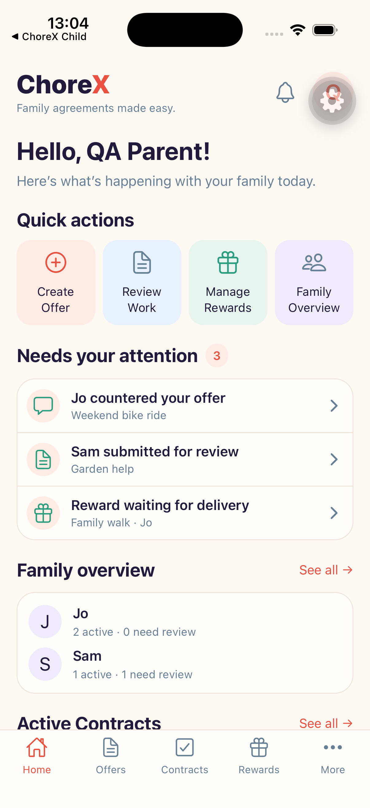
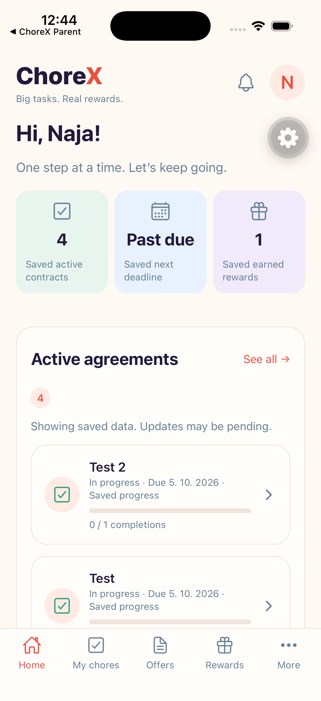
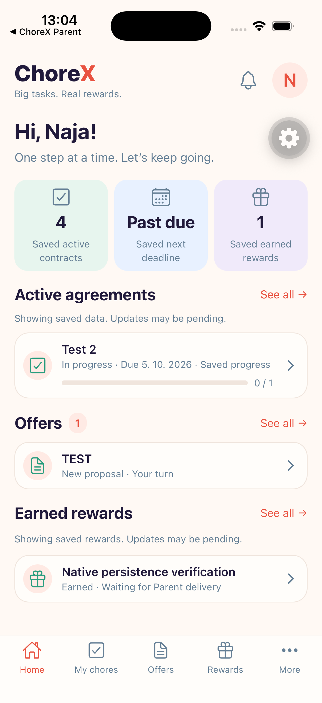
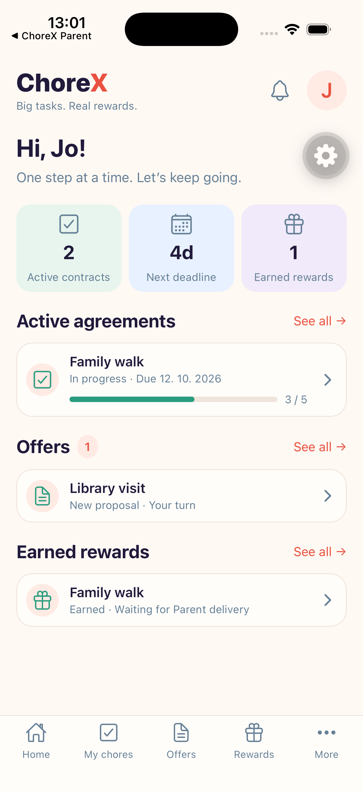
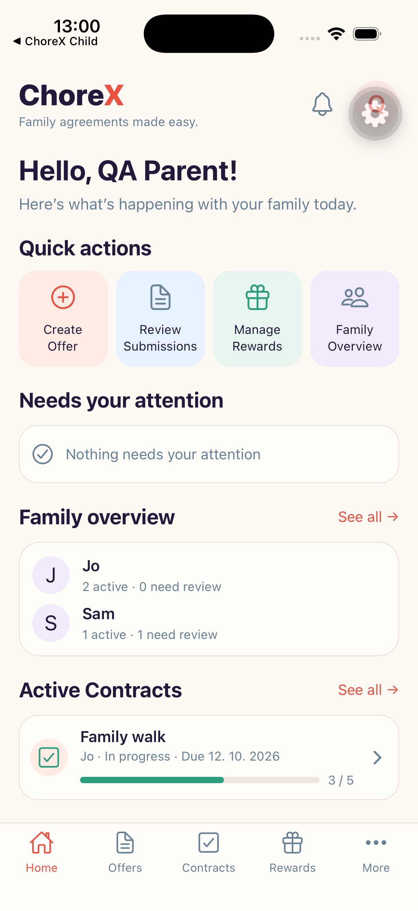
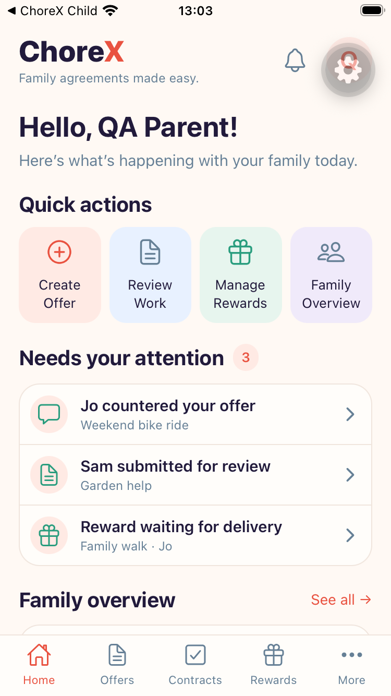
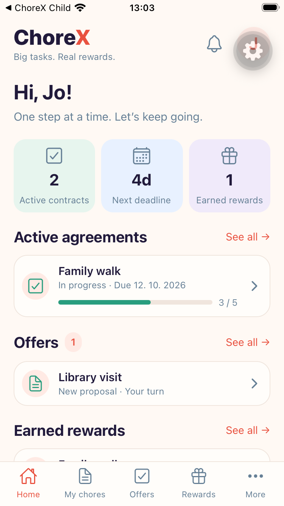
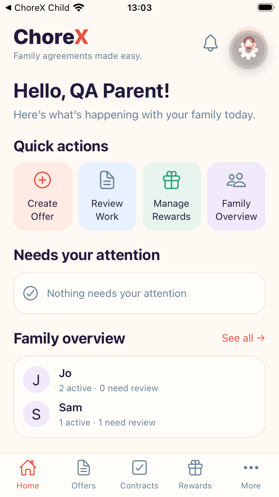
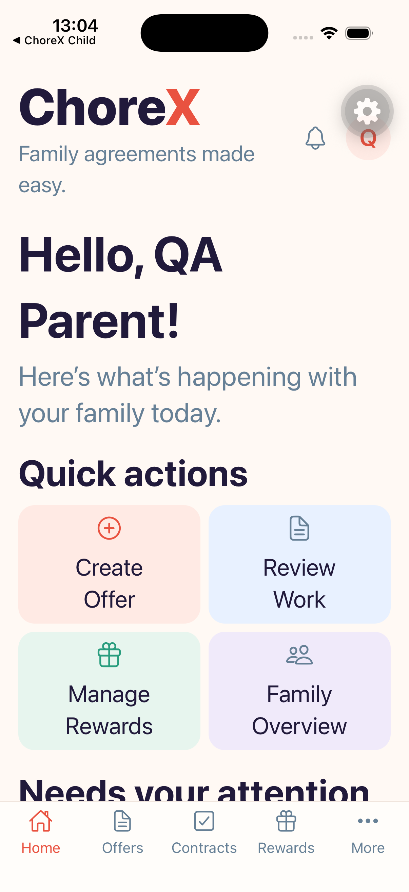
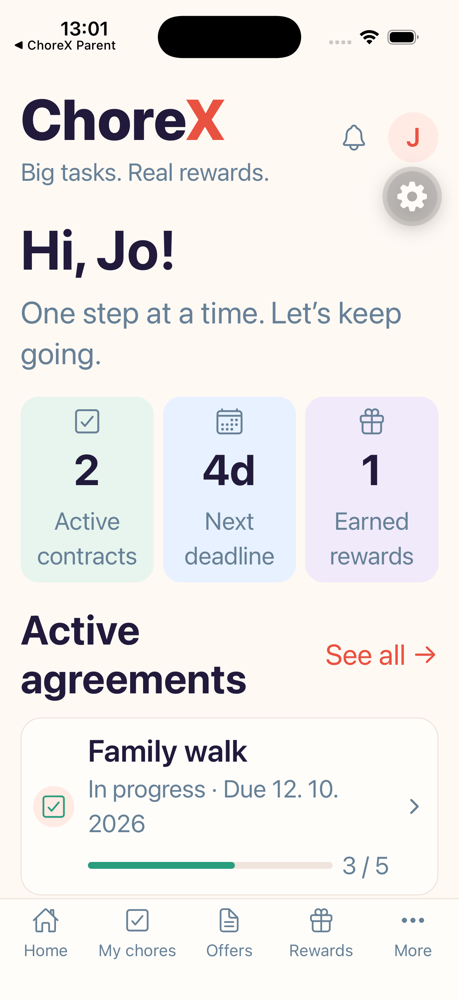